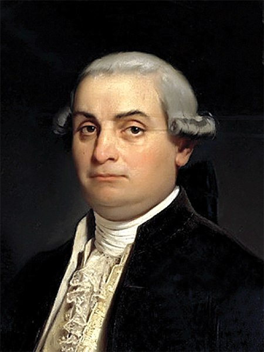

Beccaria was an Italian philosopher and jurist who revolutionized the way of thinking about crime and criminal justice. He advocated for the prevention of crime through rational and fair means, rejecting torture and cruel punishments. His ideas influenced the modernization of judicial systems and today are the foundation of human rights and an ethical approach to law enforcement.
